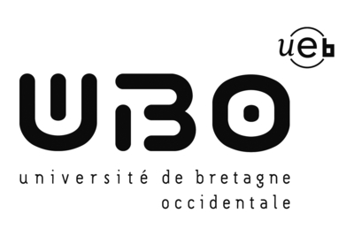

Karam EL KHALFOUNI
Élève ingénieur en développement logiciel
23 ans
Marocain
elkhalfouni.karam@gmail.com
+337.69.49.06.63
2,4 rue des Archives Cité U de Kergoat, C412
Formations
- Depuis septembre 2016
- Deuxième année cycle Master « Développement à l’Offshore des Systèmes d’Information » (DOSI)
Université de Bretagne Occidentale (UBO) – Brest - France

- Septembre 2014 - Juin 2016
- Cycle ingénieur - Génie informatique
École Nationale des Sciences Appliquées de Tanger (ENSAT) – Tanger - Maroc
-
- Septembre 2010 - Juin 2014
- Cycle préparatoire intégré
École Nationale des Sciences Appliquées de Tanger (ENSAT) – Tanger - Maroc
-
Compétences
- Langages de programmation
- C, C++, Java/JEE, C#, XML, HTML/CSS, PHP, Javascript, Pascal, UNIX shell.
- Bases de données
- Oracle, PL/SQL, MySQL, MongoDB, Neo4j.
- Conception et modélisation
- UML, Méthode Merise.
- Logiciels scientifiques
- Matlab, Mathematica, Maple.
Expériences professionnelles
- Juin 2016 - Juillet 2016
- Création d'un site web adaptatif (responsive design)
Société MySchool - Rabat - Maroc

-
- Février 2016
- Réalisation d'une application de résolution d'un atelier à cheminements multiples avec un algorithme de colonie de fourmis
École Nationale des Sciences Appliquées de Tanger (ENSAT) – Tanger - Maroc
-
- Janvier 2016
- Conception et réalisation d'un application pour suivre les actualités de football
École Nationale des Sciences Appliquées de Tanger (ENSAT) – Tanger - Maroc
-
- Décembre 2015
- Création d'une plateforme web pour la gestion de l'école
École Nationale des Sciences Appliquées de Tanger (ENSAT) – Tanger - Maroc
-
- Juin 2015 - Juillet 2015
- Mise en place d'une solution de gestion de parc informatique
Direction du Centre Hospitalier Ibn Sina - Rabat - Maroc
-
Langues
- Français
- DELF B2
- Anglais
- Arabe
- Langue maternelle
- Espagnol
Centres d'intérêts
- Esport
Football
Sciences